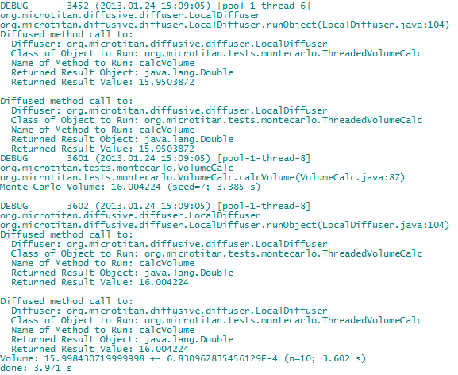

Please Participate: The Diffusive reference implementation works, but is still in development. There are a number of items and features to be implemented for the base version. And there are a number of enhancements that ought to be developed regarding deployment and management of the diffusive network.So if you find you like Diffusive, please participate (contact: Rob Philipp).
For a more complete description of diffusive programming and the reference implementation, please see the the Overview or download the Diffusive Programming paper.
The next sections describe how to work with Diffusive in its current state. As Diffusive evolves, many of the idiosyncrasies of the current state will be removed, and it will become much easier to work with and use.
Diffusive version 0.2.1 offers a new set of examples that you can run with minimal configuration. There are three examples based on a Monte-Carlo volume approximation that calculates the variance in the individual runs as an estimate of the simulation error. Each example build upon the previous one.
This is the first, and simplest example, and should run without any modification. This demo runs the
DiffusiveLauncher with a strategy that doesn't contain any end-points. This causes Diffusive to
use a LocalDiffuser. The code is still diffused, however, only to the local diffuser. In this
example, you launch the example application by using the DiffusiveLauncher, and the methods marked
@Diffusive in the org.microtitan.tests.montecarlo.VolumeCalc will be diffused
to a local diffuser, by the application-attached diffuser.
This second example builds on the first. Although, in this example, everything runs on a local machine, you will
actually diffuse code to a diffuser running in a separate process. By configuring your application-attached
diffuser differently, and launching a RestfulDiffuserServer, the diffusive method in the
org.microtitan.tests.montecarlo.VolumeCalc will be diffused to the RESTful diffuser server.
This third example builds on the first two by adding a RestfulDiffuserServer running on a
different machine. The diffusive method in the org.microtitan.tests.montecarlo.VolumeCalc will now
be diffused to the remote RESTful diffuser server. Additionally, the local RESTful diffuser server will provide
the remote RESTful diffuser server the Class object it needs to deserialize and execute
the diffused method.
The examples subdirectory of the distribution directory contains the configuration files for these three examples, a README.txt file for each example, and the JAR file containing the example code that is to be run using Diffusive. In the next sections we give steps to run the examples.
Recall that in this example we will launch the application by using the DiffusiveLauncher,
and the methods marked @Diffusive in the org.microtitan.tests.montecarlo.VolumeCalc
class will be diffused to a local diffuser, by the application-attached diffuser.
The configuration files for the local, stand-alone diffusion example can be found in the
Diffusive_vX.Y.Z/examples/local_stand_alone directory. This directory contains a
subdirectory launcher and a README.txt. The subdirectory has two
files: restful_diffuser_config.xml and random_diffuser_strategy.xml.
The first file is the configuration file used by the DiffusiveLauncher to set the strategy,
the object serializer, and end-points used by the application-attached diffuser. In this example,
we don't need to alter either of these configuration files.
To run this example through a console, please do the following:
Diffusive_vX.Y.Z/jars directoryjava -jar Diffusive_Launcher_0.2.1.jar
--config-dir=../examples/local_stand_alone/launcher/
--execute-class=org.microtitan.tests.montecarlo.ThreadedVolumeCalc
--class-path=../examples/example_0.2.1.jar
The end of your output should look something like this.

Notice that the second to last line of the output contain the average volume, its variance, the number of simulations, and the overall time it took to run the simulation. And the last line displays the overall time to run the simulations and the set up and tear down time.
Now let's turn to the command-line options in step 2.
--config-dir--execute-classDiffusiveLauncher in which class the application's
main(...) method can be found. The "application" is the application you wish to execute
through Diffusive. The DiffusiveLauncher is a container in which your applicaiton will
run. In this case, we are executing the Monte Carlo volume calc test application found in the
org.microtitan.tests.montecarlo.ThreadedVolumeCalc class.
--class-pathThis option tells the DiffusiveLauncher where to find the classes that are part of the
application to be executed, and which are not part of the diffusive distribution.
Important Point: You must use the "--class-path" option rather than the standard option "-cp" (or "-classpath") or the class path environment variable when specifying where to find the application classes.
Recall that when running a Java application, which is packaged in a JAR, using the command
java -jar Diffusive_Launcher_0.2.1.jarthe class path used by Java to load classes is the one specified in the JAR file's manifest (the Class-Path attribute). If you ran the command
java -cp directory/to/nowhere -jar Diffusive_Launcher_0.2.1.jarthe JVM will ignore the class path you specified on the command-line. In fact, it will ignore all other class path settings. (See, for example, Oracle's Java launcher documentation. Specifically, see the documentation for the "-jar" option: "When you use this option, the JAR file is the source of all user classes, and other user class path settings are ignored.")
For a full list of the diffuser launcher's command-line options, type
java -jar Diffusive_Launcher_0.2.1.jar --help
Recall that in this example, although all processes will run on our local machine, we will diffuse methods to a RESTful diffuser server running in a separate process than the process from which we launched our application. Accordingly, this example will be slightly more complex and require us to make a few modifications to the diffusive launcher's configuration files. And, we'll have to start up a RESTful diffuser server first, before we launch the example application.
The configuration files for the local diffusion example can be found in the Diffusive_vX.Y.Z/examples/local
directory. This directory contains two subdirectories launcher and diffuser_server,
and a README.txt.
The launcher directory contains the same configuration files as in the local, stand-alone example.
However, we want diffusive launcher to diffuse methods to the RESTful diffuser server running in a
separate process. To achieve this, we'll have to modify its strategy configuration file,
random_diffuser_strategy.xml,by specifying the end-point (IP address) for the RESTful
diffuser server.
The diffuser_server subdirectory contains the configuration files for the RESTful diffuser server.
Because the RESTful diffuser server will run on the local machine, and won't diffuse
methods any further, we won't have to modify any of its configuration files for this example.
To run this example:
Diffusive_vX.Y.Z/jars directoryDiffusive_vX.Y.Z/jars directory, type
java -jar Diffusive_Server_0.2.1.jar
--config-dir=../examples/local/diffuser_server/
--class-path=../examples/example_0.2.1.jar
to start the RESTful diffuser server. Your output should look like this:
your.ip.address", with your IP address (or domain name), in the
configuration file launcher/random_diffuser_strategy.xml. Do not use
"localhost" as your IP address.
<RandomDiffuserStrategyConfigXml>
<clientEndpoints>
<endPoint>http://your.ip.address:8182/diffusers</endPoint>
</clientEndpoints>
<randomSeed>3141592653</randomSeed>
</RandomDiffuserStrategyConfigXml>
Diffusive_vX.Y.Z/jars directory, type
java -jar Diffusive_Launcher_0.2.1.jar
--config-dir=../examples/local/launcher/
--execute-class=org.microtitan.tests.montecarlo.ThreadedVolumeCalc
--class-path=../examples/example_0.2.1.jar
to launch the example application.
The end of your output should look something like this.
Notice that the second to last line of the output contain the average volume, its variance, the number of simulations, and the overall time it took to run the simulation. And the last line displays the overall time to run the simulations and the set up and tear down time.
And best of all, notice that your application ran slower! What gives? Using the local diffuser, the runtime was about 3.6 seconds. Now using the RESTful diffuser, we're at 4.1 seconds! We're well on our way to maximizing our execution time! Well, that's the overhead of serializing/deserializing the methods' objects and the results. You'll also have noticed that the terminal window from which you started the RESTful diffuser server spit out some logs.
You're on a roll. Now for the more complicated example!
Recall that in this example we'll be diffusing a method from our local machine to a remote machine. This example is the most complex of the three examples. There are a fair number of things that can go wrong that may prevent the example from working properly. So we'll try to give you the tools to get basic troubleshooting information that will help you separate your configuration or system/network problems from any bad code in Diffusive.
The configuration files for this example are located in the Diffusive_vX.Y.Z/examples/remote_single
directory. This directory contains three subdirectories launcher, diffuser_server,
and remote_diffuser_server. It contains one README.txt file.
The local RESTful diffuser server in this example is slightly different from its purpose in the previous, local diffusion,
example. In the local diffusion example, the application-attached diffuser diffused methods to it. In this example,
the application-attached diffuser diffuses methods to the remote RESTful diffuser server, and the local RESTful
diffuser server provides the Class objects to the remote diffuser server.
To run this example:
Diffusive_vX.Y.Z/jars directoryDiffusive_vX.Y.Z/jars directory on your local machine, type
java -jar Diffusive_Server_0.2.1.jar
--config-dir=../examples/remote_single/diffuser_server/
--class-path=../examples/example_0.2.1.jar
to start the local RESTful diffuser server.
Diffusive_vX.Y.Z/jars directoryDiffusive_vX.Y.Z/jars directory on your remote machine, type
java -jar Diffusive_Server_0.2.1.jar
--config-dir=../examples/remote_single/remote_diffuser_server/
to start the remote RESTful diffuser server. Alternatively, if you would like to the run
the remote server on the same box, you can issue the following command (instead of the
one above)
java -jar Diffusive_Server_0.2.1.jar
--config-dir=../examples/remote_single/remote_diffuser_server/
--server-uri=http://your.ip.address:8183
where the --server-uri allows you to specify the URL on which the server runs.
In this case we tell the RESTful diffuser server to run on port 8183 instead of port 8182.
Just remember to replace the text, "your.ip.address", with your IP address
(or domain name) and don't use "localhost".
Important Point: We don't add the --class-path
option when starting remote diffuser server. This is because, as you may recall, the local
RESTful diffuser server will provide the Class objects to the remote server when
called.
If you add the --class-path option, then the remote server will look into the
directory or JAR on its machine to locate the class files its needs.
ip.address.of.remote.machine", with the IP address (or domain name) of
the remote machine, in the configuration file launcher/random_diffuser_strategy.xml
located on your local machine.
<RandomDiffuserStrategyConfigXml>
<clientEndpoints>
<endPoint>http://ip.address.of.remote.machine:8182/diffusers</endPoint>
</clientEndpoints>
<randomSeed>3141592653</randomSeed>
</RandomDiffuserStrategyConfigXml>
Important Point: If you chose to run the "remote" server on your local
machine by setting the --server-uri option, then make sure you use that
URI in the XML file above.
your.ip.address", with your IP address (or domain name), in the
configuration file launcher/restful_server_config.xml located on your local machine.
Do not use "localhost" as your IP address.
<RestfulDiffuserConfigXml>
<classPathList>
<classPath>http://your.ip.address:8182/classpath</classPath>
</classPathList>
<loadThreshold>0.75</loadThreshold>
<serializerName>persistence_xml</serializerName>
<strategyConfigClassName>
org.microtitan.diffusive.diffuser.strategy.RandomDiffuserStrategyConfigXml
</strategyConfigClassName>
<strategyConfigFile>
../examples/remote_single/launcher/random_diffuser_strategy.xml
</strategyConfigFile>
</RestfulDiffuserConfigXml>
Diffusive_vX.Y.Z/jars directory on your local machine, launch the example
application by typing:
java -jar Diffusive_Launcher_0.2.1.jar
--config-dir=../examples/remote_single/launcher/
--execute-class=org.microtitan.tests.montecarlo.ThreadedVolumeCalc
--class-path=../examples/example_0.2.1.jar
The end of your output should look something like this.
If everything ran correctly, then congratulations! You ran this, and are well on your way to become a proficient diffuser! If, on the other hand, you had problems, then there are a couple quick things you can try.
If Diffusive just hangs an then times out (and spews error message on one of your three terminal windows) you could have connection issues. For example, you may have a firewall running on one of your machines that doesn't allow port 8182, or external connections, or neither. You can test this. Recall that the diffusers are RESTful web services. So, we attempt to can connect to them through our browser.
Class objects from
the local diffuser so that it can deserialize the objects coming to it from your application-attached diffuser.
So we do the same thing, except from you remote machine, open a browser and typeRecall that the remote diffuser server relies on the class path end-point specified in the laucher's configuration
file. In our case, the remote diffuser server calls the local diffuser server to ask for the Class
objects. If the local diffuser server can't locate the class requested by the remote diffuser server, then we
have a problem.
You can test this in a similar manner as we tested for connectivity. From a browser on your local machine, type
http://ip.address.of.local.machine:8182/classpath/org.microtitan.tests.montecarlo.ThreadedVolumeCalc
and you should get back something like this
Repeat this for the following classes:
org.microtitan.tests.montecarlo.ThreadedVolumeCalcorg.microtitan.tests.threaded.ResultIf you did NOT have connectivity problems, then repeat the above tests from the remote server.
Maybe you miss-typed an IP address or switched your local and remote IP addresses.
If neither of these turn out to be the issue, then set the log-level to DEBUG through the command-line option, --log-level=DEBUG for the launcher and the two servers and retry. Maybe the logs will give you some nugget of information.
If still nothing works. Don't get frustrated. Rather, send me an email and I'll try to help trouble shoot.
Diffusive requires Java 7.
@Diffusive. Javassist finds those annotations at class-load time and replaces
all method calls to these annotated methods with a call to the diffuser instead.
Serializable and have a no-arg constructor. FreezeDry is a bit
more flexible and requires neither of these, but is an alpha, and from time to time you may run into bugs.
DiffusiveLauncher, the RestfulDiffuserServer have
a command-line interface that allows options and configuration items to be specified when running
the distribution JARs (Diffusive_Launcher_x.y.z.jar and Diffusive_Server_x.y.z.jar)
from a command-line. The XML configuration objects RestfulDiffuserConfigXml and
RestfulDiffuserServerConfigXml also have a command-line interface that allows you to
generate and validate configuration files. But at this time, these are only available through the IDE.
Given its current-state idiosyncrasies, configuration of Diffusive is accomplished through Java source files that are are compiled with the build. (See configuration idiosyncrasy.) There are two parts of Diffusive the must be configured: the diffuser configuration; and, the diffuser-server configuration. In the next two subsections we describe the purpose and elements of both configurations.
Recall that, although all diffusers are the same, the application-attached diffuser is the diffuser to which diffusive methods are dispatched. It is the application-attached diffuser that then distributes the method call to remote diffusers. To do this, the application-attached diffuser must know which to which remote diffusers it can send methods--in other words, it must know its end-points and its diffusion strategy. It must also know which serialization mechanism to use. And, it must be able to supply the remote diffuser with a set of class paths from which the remote diffuser can load classes. This configuration is covered in the next section, Default Diffuser Configuration
Recall also that to communicate with a RESTful diffuser, you must launch a diffuser server (RestfulDiffuserServer).
The diffuser server provides two services. It provides access to the diffusers. And, it provides access to the Class
objects needed by the remote diffuser's class loader. The RestfulDiffuserServer extends the
javax.ws.rs.core.Application class and binds to the JAX-RS resources,
RestfulDiffuserManagerResource for access to the diffusers, and the RestfulClassPathResource
to allow remote loading of classes. When a new RestfulDiffuserManagerResource is created, it must be handed
a default set of end-points and a strategy with which to select the end-points. We cover this configuration in the section,
Diffuser-Server Configuration
When using the DiffusiveLauncher
directly, without extending and customizing it, the only configuration you must perform is related to the:
And all this configuration is held in the
RestfulDiffuserConfig
class' configure() method.
@DiffusiveConfiguration
public static final void configure()
{
// 1. create the serializer
String serializerName = SerializerFactory.SerializerType.OBJECT.getName();
SerializerFactory factory = SerializerFactory.getInstance();
Serializer serializer = factory.createSerializer( serializerName );
// 2. create the diffusion strategy. this holds the end-points (location) of the
// remote diffusers to which annotated methods are diffused, and the strategy
// used to determine the end-point for a diffused call.
DiffuserStrategy strategy = createStrategy();
// 3. create a list of end-points remote diffusers will look to when attempting
// to load a class
List< URI > classPaths = createClassPathList();
// IMPORTANT:
// create the diffuser and add it to the global diffuser repository. this is
// needed because the byte-code engineering framework needs access to the
// diffuser so it can replace the annotated method calls.
Diffuser diffuser = new RestfulDiffuser( serializer, strategy, classPaths, LOAD_THRESHOLD );
KeyedDiffuserRepository.getInstance().setDiffuser( diffuser );
}
You may have noticed a set of static variables a the top of the RestfulDiffuserConfig source file.
// holds the list of client endpoints to which diffused methods are sent. the end-point must
// have a restful diffusive server running that can accept requests.
public static final List< String > CLIENT_ENDPOINTS = Arrays.asList( "http://192.168.1.4:8182" );
// holds the base URI of the class path that gets passed to the remote diffuser manager
// when creating a diffuser. this allows the remote code to load classes from a remote
// server. This URI typically points to the host running that is launching the code to be
// diffused (since it is that code that has the classes), or some other host that holds
// all the required classes (that have been deployed there) and is running a restful
// diffuser server
public static final List< String > CLASSPATH_URI = Arrays.asList( RestfulDiffuserServer.DEFAULT_SERVER_URI );
// the threshold for CPU loads, above which the diffuser will send the tasks to a
// remote diffuser, unless of course, there are no client end-points specified. When
// the threshold is below the load threshold, the diffuser will call the local diffuser
// to execute the tasks.
public static final double LOAD_THRESHOLD = 0.5;
These variable provide an easy way to set the basic configuration. However, you can update this class to read from a file, or do whatever you want. This configuration file can also be changed, and we discuss that and a few other basic customizations in the next section.
In most cases the RestfulDiffuserConfig class should provide enough flexibility. However,
more than likely you'll want to implement a configuration class that reads the configuration from a file (for
sure I have that on my ToDo list). Although you could simply modify the existing RestfulDiffuserConfig
class, a more sensible approach is to create a new class that meets your needs, and then tell the
DiffusiveLoader object to use that configuration class.
Fortunately, this is quite straightforward. Simply create a new class MyDiffusiveLauncher that
extends DiffusiveLauncher. In your new launcher, create a main and use the following code.
public class MyDiffusiveLauncher extends DiffusiveLauncher {
public static void main( String[] args )
{
// create a loader with that uses your specific configuration class and use
// that to create a diffuser launcher
List< String > configClasses = Arrays.asList( MyConfigClass.class.getName() );
DiffusiveLoader loader = createLoader( configClasses );
DiffusiveLauncher launcher = new DiffusiveLauncher( loader );
final String classNameToRun = // the name of the your application's main class
final String[] programArgs = // the program arguments expected by your application
launcher.run( classNameToRun, programArgs );
}
}
Notice that we no longer use DiffusiveLauncher's default, no-arg constructor. Instead,
we use the DiffusiveLauncher.createLoader(...) method to create a new loader that uses
your new configuration class instead, and then hand that new loader to the DiffusiveLauncher's
constructor. The new configuration class is shown below.
public class MyConfigClass {
@DiffusiveConfiguration
public static final void configure()
{
// add your configuration code
.
.
.
// IMPORTANT: you MUST create the diffuser and add it to the repository
// create the diffuser and add it to the global diffuser register
Diffuser diffuser = new RestfulDiffuser( serializer, strategy, classPaths, LOAD_THRESHOLD );
KeyedDiffuserRepository.getInstance().setDiffuser( diffuser );
}
}
More extensive customizations, such as creating and using a new loader follow the same pattern. Clearly, the
DiffusiveLauncher could be updated to allow that specification of the configuration class.
That would be a great contribution.
When running the RestfulDiffuserServer class' main(...) method without any
command-line arguments, it uses the default configuration class, RestfulDiffuserServerConfig. In a
manner similar to the configuration of the application-attached diffuser, the server configuration method(s) are identified
by the annotation @DiffusiveServerConfiguration. The code below shows the default configuration
method.
@DiffusiveServerConfiguration
public static final void configure()
{
// 1. create a list of end-points that all new diffusers will have
List< URI > clientEndpoints = // the list of end-points
// 2. create the strategy by which end-ponts are selected
DiffuserStrategy strategy = new RandomDiffuserStrategy( clientEndpoints );
// 3. IMPORTANT: all configurations MUST add the strategy to the repository
// add the strategy to the diffusive-strategy repository
KeyedDiffusiveStrategyRepository.getInstance().setValues( strategy, LOAD_THRESHOLD );
}
The customization of the the diffusive-server configuration can be accomplished by creating a new configuration class and specifying it in as a command-line argument when launching the server.
Running Diffusive is pretty straightforward. In this section we'll walk you through running the test cases using Eclipse IDE. In this way, you'll be set up for debugging and participating in Diffusive's development.
RestfulDiffuserConfig class, update the end-points to hold all
the IP addresses except the box on which you will launch the application.RestfulDiffuserServerConfig is an empty list. This tells
new diffusers that they will run everything locally, and won't diffuse any methods further.RestfulDiffuserServer on all the machines without specifying any
command-line arguments.DiffusiveLauncher on your local box without specifying any command-line
arguments.At this point, the code should be diffusing and your results will soon start coming back. You can adjust the logging levels on the remote machines if you would like to see some action.